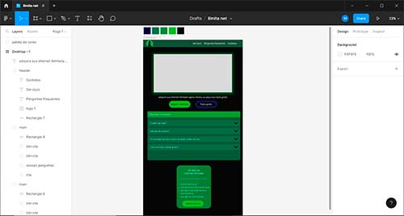
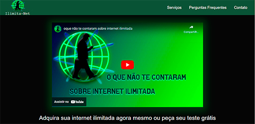

Seja bem-vindo(a) me chamo Mateus Duarte e esse é meu portifólio


Olá, eu sou o Mateus, sou um ex-atleta que ama programação, eu sempre tive paixão por tecnologia e desde pequeno eu já construía brinquedos com peças de eletrônicos velhos, meu primeiro contato com a programação foi através do arduino, eu não sabia oque era programação, mas eu sabia oque eu queria fazer, então eu saí pesquisando na internet e consegui fazer um cronômetro automático programando em c++, eu não sabia programar, mas eu sempre fui ótimo com logica, então consegui desenrolar e termina o projeto que era um cronômetro inteligente que parava o tempo quando você passava na frente dele, muitas pessoas quiseram comprar esse meu projeto, porém, eu não tinha capacidade para lo desenvolve em massa, e depois disso inicie os estudos com python, depois HTML, CSS e JavaScript e o resto da minha história eu ainda estou construindo segue a arvore dos meus estudos abaixo para ver em tempo real oque estou estudando
Tecnologias

Python
Python foi a primeira linguagem de programação que eu me a profundei e
que eu posso dizer que foi a primeira que aprendi, com ela eu foquei muito em
desenvolver softwares, bots e em fazer web-scraping, e atualmente estou
estudando algumas bibliotecas para
desenvolver apps mobile e desktop
os projetos feitos com python foram abertos na sessão a baixo
HTML5
o html eu já posso dizer que dominei 100% por mais que algumas vezes eu tenha algum problema eu sempre consigo resolver. Se fosse para cita algo que me falta no html, seria só um curso de SEO que eu ainda não fiz, porém, creio que depois disso a parte de html vai esta zerada. os projetos feitos com HTML foram abertos na sessão a baixo
JavaScript
Java script é uma linguagem que eu venho pegando
maturidade com o tempo e com os projetos que venho desenvolvendo, eu
já consegui fazer bastante coisas com ela pós ela é bem parecida com o
python porém eu ainda tenho muito caminho para percorrer com ela
alguns projetos feitos com java script foram abertos na sessão a baixo
React
Estudos em Progresso
CSS3
Css é uma linguagem que eu estou amando aprender e desenvolver, ela é uma linguagem bem poderosa que permite uma ampla gama de possibilidades de alteração/criações. Ccs está sendo uma linguagem que eu venho me desenvolvendo muito bem, eu facilmente posso dizer que dominei a linguagem, já tenho bastante facilidade em trabalhar com ela, e ainda venho melhorando mais a cada dia. alguns projetos feitos com CSS foram abertos na sessão a baixo
Bootstrap
O bootstrap é uma framework genial, e lhe faz polpar muito tempo, quando você já entende bem sobre css fica fácil pegar a lógica do bootstrap eu me dei bastante bem com ela e já posso dizer que eu estou apto a criar sites com ela alguns projetos feitos com o bootstrap foram abertos na sessão a baixo
SQL
Eu aprendi o básico de SQL quando eu fiz o curso, ele foi voltado ao MySQL porém eu aprendi a linguagem SQL para poder trabalhar com qualquer banco de dados. alguns projetos feitos com o bootstrap foram abertos na sessão a baixo
Habilidades

Robô Derby
Python
Esse robô foi um projeto criado para uma empresa que precisava de um robô que puxasse os dados de um site esportivo para uma inteligência artificial analisar
Robô Instagram
Python
Esse robô foi criado para eu poder ganhar um dinheirinho vendendo seguidores do Instagram
ilimita Net
Site
esse foi um site que eu construir para vender serviços de internet ilimitada

Figma
projentando a estrutura do site e o design
Eu comecei planejando a paleta de cor do site e em seguida o design, para me ajudar na escolha da paleta eu usei o adobe color, e o design foi da minha criatividade mesmo
Preparação Marketing

Estudos jornada do herói e copyright
Eu estudei um pouco de marketing digital e algumas estratégias para ajudar a vender mais, eu não sei muito sobre copy, porém eu tenho um certo dom para criar algumas, ai eu escrevi um roteiro e fui pensar nas estratégias para atrair o público
photoshop

artes e redes sociais
Eu criei a arte do zero apenas re aproveitei alguns svgs para polpar tempo o do homem e o do globo, o resto eu tive que fazer na mão
PowerDirector e FL Studio
Edição do video e do audio
Para editar o video eu usei o PowerDirector um editor para móbile pôs me sinto mais confortável com ele. Já para o áudio eu usei o FL Studio eu gravei o áudio com meu celular e o microfone dele está muito ruim, então eu tive que aumentar o volume e mexer em algumas outras coisinhas para melhorar a qualidade
Robô do Marketing
Atrair publico
Depois de já ter preparado alguns conteúdos e feito a estratégia do marketing eu criei uma persona de um cliente para ser o alvo, estudei ela e criei um robô em python que me retornava um arquivo json com diversos usuários de pessoas que poderiam ter interesse em meu produto, e com esse mesmo robô eu seguia todas essas pessoas no instagram, e com menos de 50 seguidores eu consegui fazer mais de 100 reais.
Ir ao Site